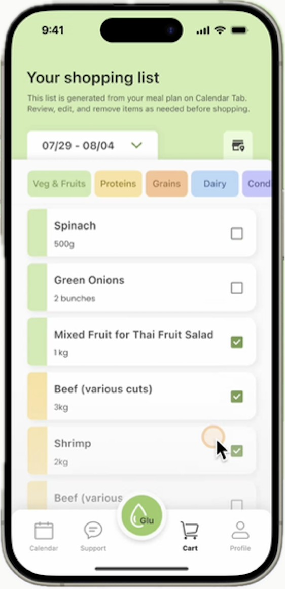
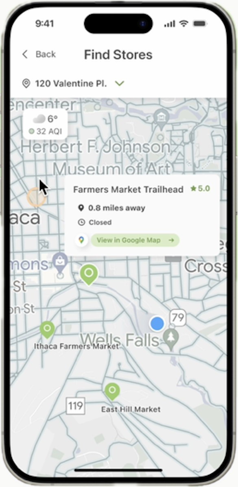
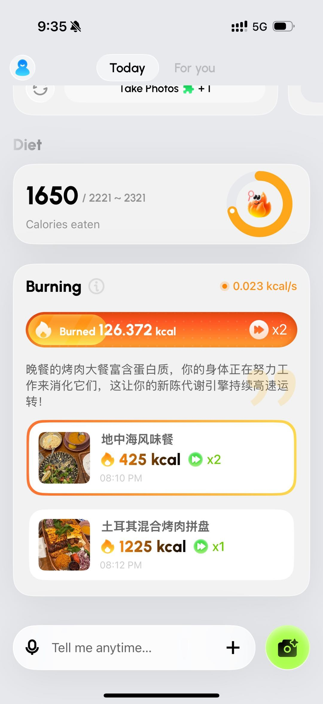

Yikai Liu · 刘益恺
AI health products · GreenPlatter / Jovida
~2 years shipping AI health: GreenPlatter and Jovida
Started at GreenPlatter on metabolic modeling and recipe evaluation, then joined Fluxvita on the product side for the North American AI weight-loss coach Jovida. Both were English-first products in a compliance-aware context, built largely as 0-1 work.
GreenPlatter



- Evidence-based contribution to a 0-1 AI nutrition model for metabolic syndrome and diabetes, including macro constraints and meal pushes under glycemic control.
- Helped build 10,000+ recipe and evaluation-set items; recommendation quality and dietary diversity improved on the order of 50%.
- Built internal tooling for batch health-education graphics and batch testing; roughly 2–3× faster test and dev cycles.
- 30+ structured interviews with people living with diabetes to refine push logic and UX.
Jovida



Team photo

- North American AI weight-loss coach Jovida: 0-1 product architecture; agent-in-human-loop patterns; mapped clinical-style reasoning into agent decision trees for safer outputs.
- Led "energy burn", "food scoring", "dining and recipe picks", and "onboarding" from specs through prompts, QA, and analytics. Next-day retention above 25%, core feature use above 70%, funnel completion above 90%.
- High-fidelity Vibe Coding demos plus API/MCP demos to tighten engineering handoffs.
- Dedicated model evaluation sets and team prompt tuning; nutrient recognition and food-scoring precision up ~30%.
- Solo Instagram and TikTok from zero to roughly one hundred followers.